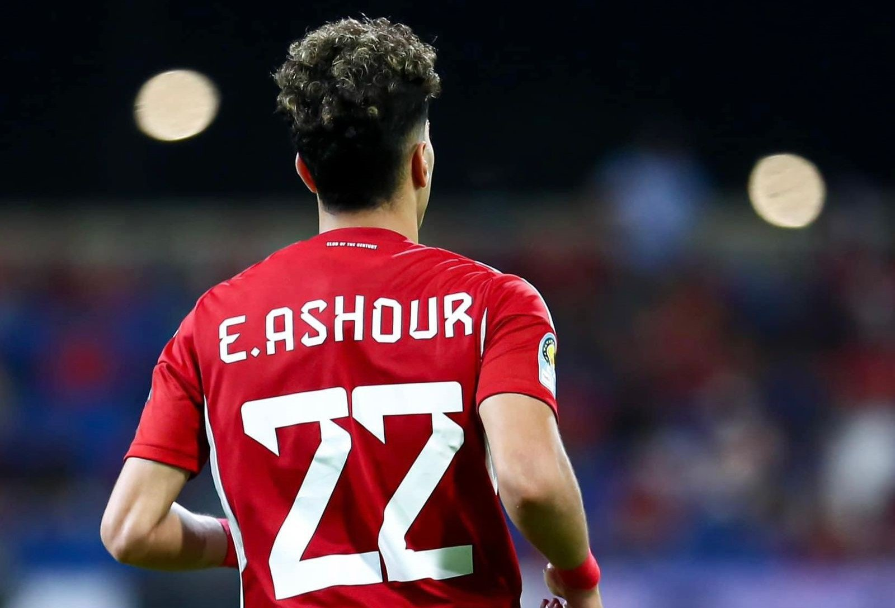
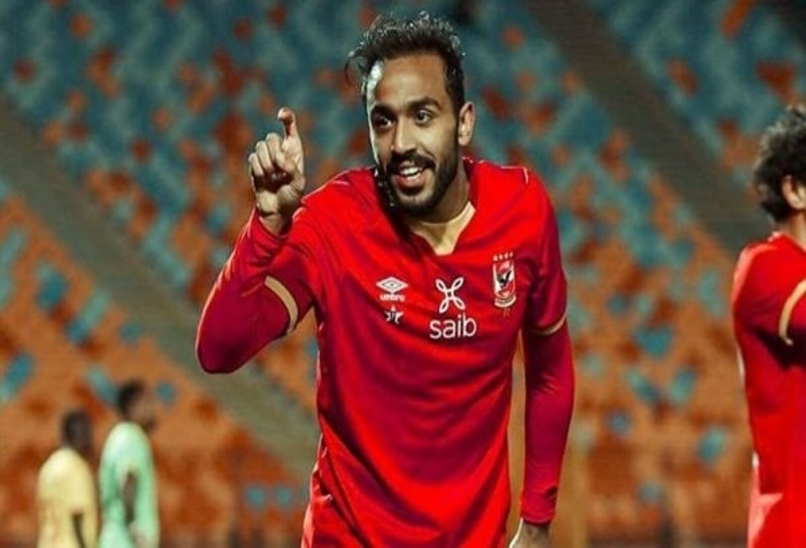
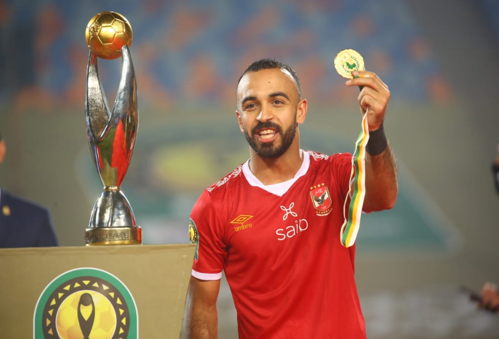
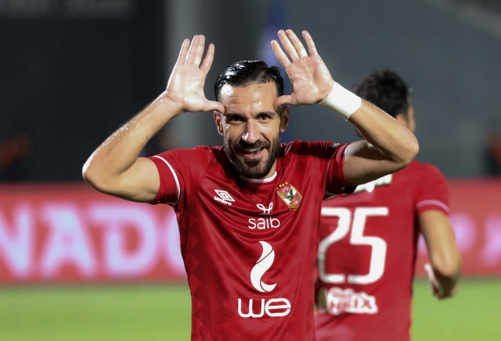
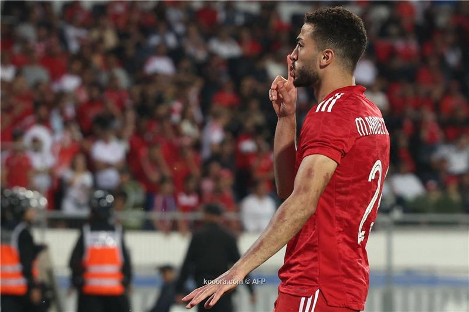
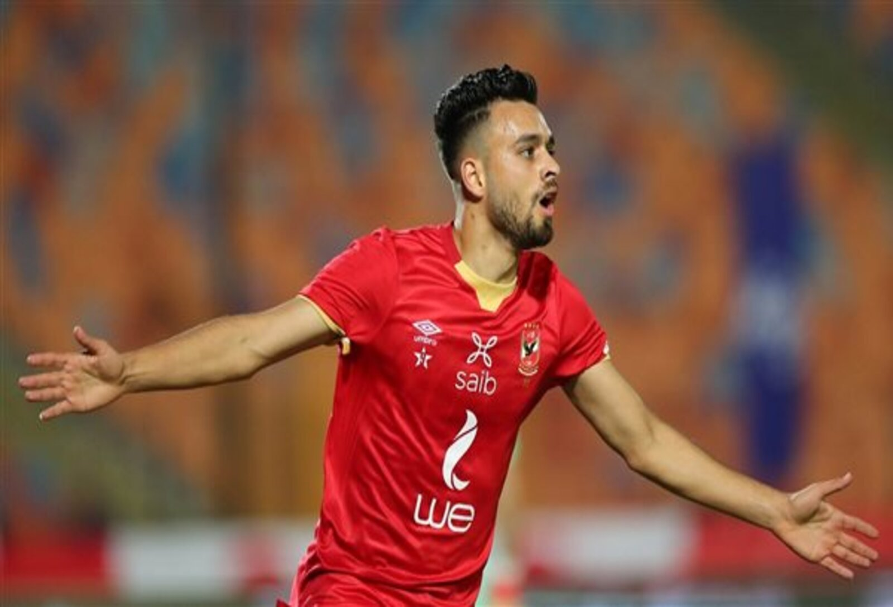

This is information about some Al-Ahly club players
| Ashour started his career at Ghazl El Mahalla, joined Zamalek. Zamalek sold him to Midtjylland in Denmark, then returned to Egypt to join the best team in Africa and the club of century Al Ahly in 2023. |  | After beginning his career as a youth player with Al Ahly, he made his professional debut in the Egyptian Premier League with ENPPI in 2011. He joined Swiss Super League side FC Luzern on a season-long loan deal in 2013 but left the club in March 2014 after his contract was terminated with Luzern citing inappropriate behaviour.[3] He returned to Switzerland the following season for a six-month loan spell with Grasshopper. |  |
| Afsha started his career at ENPPI and Pyramids, before joining Al Ahly in 2019. In the 2020 CAF Champions League Final, he scored the winning goal for Al Ahly in a 2 - 1 victory over their rivals Zamalek |  | Maâloul started his career with hometown club CS Sfaxien and became their captain from the 2014– 15 season. In the 2015–16 season, he became the top scorer in the league with 14 goals in 20 matches, a record for a defender since none has scored more than nine goals in a season. At CS Sfaxien, he wore the number 10 shirt, which is unusual for his position. On 25 July 2016, Maâloul signed a four-year contract with Al Ahly, becoming one of the Egyptian giants' key players on their way to conquering many tournaments. |  |
| is an Egyptian professional footballer who plays as a centre-back for Al Ahly and the Egypt national team. Abdelmonem featured in the final 2021 AFCON game against Senegal. |  | is an Egyptian professional footballer who plays as a forward for the Egypt national team and the Egyptian Premier League side Al Ahly |  |